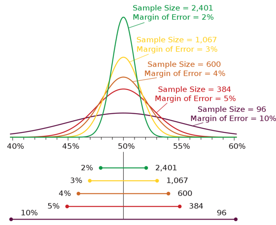
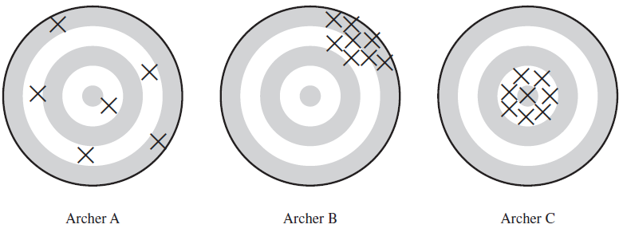
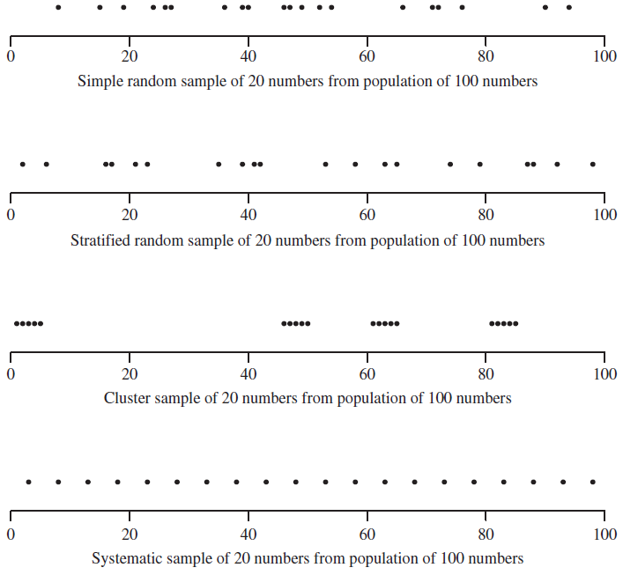
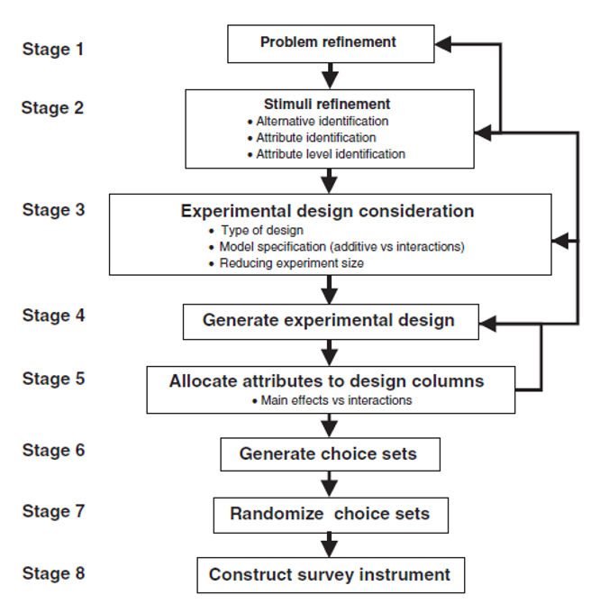
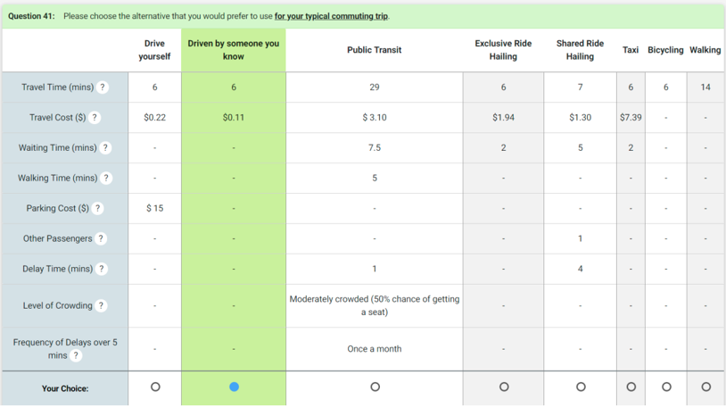
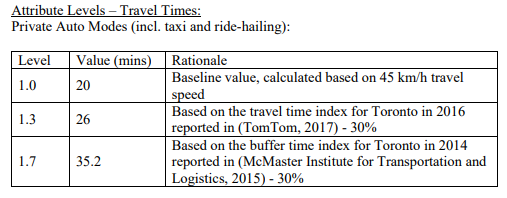
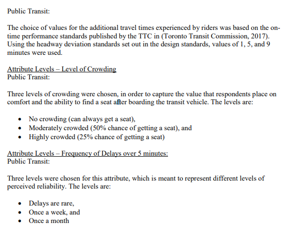

Lecture 2 - Surveys
ENCI707: Engineering Demand and Policy Analysis
Outline
- Survey terms
- Survey design
- Stated choice experiments
Survey Terms
Infrastructure Demand & Surveys
- Infrastructure demand is a function of individual decisions
- Analysis requires behavioral data: surveys!
- As with other forms of engineering analysis, survey experiments require careful design & execution
- A demand analyst must be an expert in both the subject area & knowledgeable about survey methods
Survey Jargon
- Observation unit: basic unit of measurement. In human populations, it is often individuals.
- Target population: The complete set of observations we want to study. E.g., university students, seniors, or adults with a driver’s license.
- Sample: A subset of the population.
- Sampled population: The collection of all possible observation units that might have been chosen in a sample. E.g., Canada or Alberta.
- Sampling unit: A unit that can be selected from a sample. Often, we are interested in individuals but sample households.
- Sampling frame: A list, map, or other specification of sampling units in the population from which the sample may be chosen. E.g., all residential telephone numbers in a city.
Requirements of a Good Survey
- Representative: does the sample represent the population of interest?
- Example Target vs. sample population for a telephone survey of likely voters
- Not all households have telephones: as of 2021 93.9% of Canadian households had cellphones & 47.4% had a landline
- Not all households with telephones are eligible to vote
- Some eligible respondents in the sample frame cannot be contacted, refuse to respond, or are ill
Applications Outside Home-Subject Surveys
- National Pesticide Survey, conducted by EPA, studied pesticides & nitrates in drinking water wells US-wide
- Target population: All community water systems & rural domestic wells in the US
- Sampled population: All community water systems (as listed in Federal Reporting Data System) & all identifiable domestic wells willing to participate in survey
- How do we define identifiable?
- Do we expect a different response rate between community systems & domestic well owners?
Selection Bias
- Occurs when some part of the target population is sampled at a different rate than its appearance in the population
- Example: 60% of collected responses coming from men in a general population survey
- Convenience sample: When the most convenient respondents are disproportionately sampled
- Example: You sample your friends & colleagues on social media for a survey
- Example: A study of how frequently adolescents discussed alcohol use with their parents & teachers is likely biased by the fact those willing to talk to interviewers are also more likely to talk to their parents & teachers (form of self-selection)
- Likely to overestimate amount of communication on the topic
Sample Bias Due to Undercoverage
- Individuals in institutions (nursing homes or prisons) often excluded from surveys
- Conducting a survey by telephone will undersample younger individuals who are less likely to own a landline phone
- Conducting a survey by the internet will undersample rural & senior individuals
- Conducting a survey by in-person intercept will undersample introverts & reclusive authors
- If a household does not answer the door, an interviewer may select a neighbour - less likely to work outside the home?
Non-Response Bias
- Even a carefully designed survey will suffer from non-response bias
- Differences between responding & non-responding populations often unknown
- Many public & academic surveys have low response rates (<10%) - How to generalize results when 90% of targeted sample did not respond?
| Type of School District | Participation Rate (%) |
|---|---|
| Urban | 100 |
| Metropolitan suburban | 25 |
| Nonmetropolitan with more than 2000 students | 62 |
| Nonmetropolitan with 1000-1999 students | 27 |
| Nonmetropolitan with 500-999 students | 61 |
| Nonmetropolitan with fewer than 500 students | 53 |
Measurement Error
- Occurs when responses differ from the true (population) value in one direction
- People sometimes do not tell the truth: E.g., income, exercise frequency, & alcohol consumption
- People do not always understand the question: E.g., questions using jargon
- People forget: E.g., recall of all long-distance travel over the past year
Measurement Error
- People say what they think the interviewer wants to hear or what they think will impress the interview: E.g., stating they plan to buy an EV
- Certain words mean different things to different people: E.g., “Do you own a car?”
- “Does it count if I am making payments?”
- “Is a pickup truck a car?”
- “My parents own a car that I drive. Does that count?””
Sampling & Nonsampling Error
- Selection bias & measurement error are examples of nonsampling error
- Sampling error arises from the use of a sample rather than the population
- Sampling error may be negligible compared with non-sampling error
- A survey with a 30% response rate may proudly state a 3% margin of error, while ignoring a significant selection bias
Margin of Error
Intuition for Statistical Properties
Survey Design
Questionaire Design 1
- Always write down the objective of your survey
- Objectives should be specific rather than general
- Bad: “I want to learn something about auto ownership”
- Good: “What factors do people considering when deciding to own a seven-passenger over a five-passenger vehicle?
- Ask one concept per question
- “Do you agree with the Biden administration’s infrastructure spending package?”. Confuses two opinions: the opinion of Joe Biden and the opinion of the infrastructure package. Also, “spending” can have a different connotation than “investment” or “improvement”
Questionaire Design 2
- Keep questions simple & clear
- One study tested the question “What proportion of your evening viewing time do you spend watching news programs? on 53 people. Only 14 people correctly interpreted the word “proportion” as “percentage”, “part”, or “fraction”. Others interpreted it as “how long do you watch?” or “which news programs do you watch?”
- Use specific questions instead of general questions
- Bad: “Does it make you nervous taking a ride-hailing (e.g., Uber or Lyft) trip?”
- Better: “I have the following concerns when making a ride-hailing (e.g., Uber or Lyft) trip : (a) It will be slower than driving myself, (b) The driver will not drive safely, (c) I do not want to share a ride with others, (d) I have no concerns, (e) Other. Please specify: ______.”
Questionaire Design 3
- On the other hand, avoid questions that prompt respondents to give the answer you want to hear
- “Most traffic crashes involve private vehicles. Would you take public transit to reduce the number of crashes on the road?”
- Avoid double negatives
- “Do you favor or oppose not allowing drivers to use cell phones while driving?” might elicit either response from a person who thinks people should not use cell phones while driving
Sampling Strategies
- Simple random sampling (SRS): Randomly sample n individuals from a population of N
- Cluster sampling: Observation units in the population are aggregated into larger sample units (clusters)
- Example: You would like to sample all Tesla owners in the United States but do not have access to a list of all owners. You do have a list of Tesla clubs. You can use SRS among the clubs and then survey all or a subsample of members in each club
- Stratified random sampling: Population divided into subgroups called strata. SRS is applied within each strata. Strata are often subgroups of interest to the researcher
- Example: Regions of the country, sizes of cities, or other variables that are readily available without having to first interview the respondents
- Stratified random sampling is common in transportation field
- Systematic sample: A starting point is chosen from a list of population members using a random number & equally spaced individuals are chosen from the list
Sampling Strategies
Stratified Sampling
- Often have supplementary information prior to conducting survey that is useful to our survey design
- New York residents pay more for housing than residents of Lincoln
- Rural residents shop for groceries less frequently than urban residents
- If there is high heteroskedicity (variance takes on different values in different subpopulations) may be able to obtain more precise (i.e., lower variance) population quantities using stratified sampling
- Example: In a population of 1,000 male and 1,000 female students, it is theoretically possible for a random sample of 100 students to contain few male (or female) students. Can take a random sample of 50 male and 50 female students to ensure correct distribution
- Sampling design can be varied between strata
- Example: In a survey of businesses, an internet survey might be used for large firms while a mail or telephone survey is used for small firms
Types of Stratified Sampling
- Proportional allocation: Number of sampled units in each stratum is proportional to the size of the stratum
- Optimal allocation: useful with heteroskedastic data. Often the case that variance is higher in larger (or higher valued) than smaller (or smaller valued) units.
- Example: A study by the Chesapeake and Ohio (C&O) Railroad Company to determine how much revenue they should get from interline freight shipments, since the total freight from a shipment that traveled along several railroads was divided among the different railroads. The C&O took a stratified sample of waybills - the documents that detailed the goods, route, and charge for the shipments. The waybills were stratified by the total freight charges. All waybills with charges over $40 were sampled, whereas only 1% of those with charges less than $5 were sampled. There was little variation in the amount owed to C&O among the smallest total freight charges, whereas the variability in the stratum with charges of over $40 was much higher.
Common Strata
- Geography: region, division, state, or county
- Sampling unit size: number of employees, number of establishments, or number of household members
- Sampling unit composition: industry classification, racial composition, or similar variables
- Note: Setting quotas is NOT stratified sampling if random sampling is not used to select individuals from each subpopulation. With quotas, we do not know the inclusion probability for a sampling unit.
- Sampling bias may exist. Interviewer will likely pick the most convenient units: persons who are easily reachable by telephone, households without menacing dogs, or areas of the forest close to the road (in case of ecological study)
Sample Size Determination
\[n = \frac{z_{\alpha/2}^2 S^2}{e^2+\frac{z_{\alpha/2}^2 S^2}{N}}\] - where - \(𝑧\) is a z-statistic - \(𝑆^2\) is the sample variance (generally unknown) - \(𝑒\) is the desired margin of error - \(𝑁\) is the population - If \(𝑛_0=\left(\frac{𝑧_{\alpha∕2}^2 𝑆}{e}\right)^2>𝑁\) then simply take a census of \(n=N\) or use \(𝑛=𝑛_0/(1+𝑛_𝑜/𝑁)\) - For large populations (\(n \approx n_0\)), need approximately same sample size regardless of if the population is 10 million or 1 billion - Approximation of 𝑆^2 1. Use sample quantities from pretesting of survey 2. Use previous studies or data available from literature 3. If all else fails… guess the variance based on some hypothesized distribution for the data! If you assume a normal distribution, could approximate variance as feasible range of values divided by 4 (within 2 SD of mean) or 6 (within 3 SD of mean).
Online Surveys
- Increasingly common form of survey administration
- Spectrum of convenience sample characteristics:
- Interviewing your friends and colleagues on social media (high bias potential)
- Using an opt-in internet panel (medium bias potential)
- Using an internet panel compiled using a variety of random sampling techniques: email, telephone, and mail-out invitations to a random sample of individuals (low bias potential)
- Effect of offering incentives and rewards for completing surveys?
Online Surveys
- As of 2024 ACS, 10% of US households did not have access to high-speed internet
- Low response rate (often 10% or less) means significant selection bias risk
- Standard online survey method is quota-based sampling with poststratification weights
- Study in 2011 found sampling-based surveys consistently more accurate than non-probability-sample surveys, even after poststratification weighting of data
- Study that recruited US adults from seven vendors found a 15-25% overlap in the sample pool
Poststratification Weighting
- Method to adjust sample so it better matches population
- Standard method is called raking or iterative proportional fitting (IPF)
- Like a trip distribution model, we want to match marginal control totals by adjusting a vector of weights until convergence
- Typical poststratification weighting variables:
- Person weights: age, educational attainment, & employment status
- Household weights: size, income, & geographic location
- General process:
- Aggregate observations along a given dimension (e.g., age by 10-year interval)
- Generate ratios of population vs. sample along the given dimension
- Apply ratios across individual weights (initially all 1s)
- Repeat to convergence of weighting ratios
Stated Preference Experiments
Need for Stated Preference Data
- It is rare to observe the decision-making process
- What if we want to know demand for a good or service that does not exist yet (at least not locally)?
- Example: Would you use a vertical takeoff and landing (VTOL) vehicle?
Comparison of Revealed Preference (RP) & Stated Preference (SP) Observations
| Factor | Revealed Preference | Stated Preference | Comment |
|---|---|---|---|
| Form of observed choice behaviour | Actual ‘compromise’ choice with real-world constraints | Potentially concerns ‘preferences’ rather than ‘compromise’ choice as hypothetical context can be used to remove real-world constraints | Relates to purpose of survey |
| Establishing values for explantory variables | Engineering values expensive to establish; stated values inexpensive but potentially distorted by faulty perceptions and ex-post justification | Presented vlaues inexpensive and unambiguous | Advantage with SP |
| Correlation structure in estimation data | Correlation structure uncontrolled; analyst must accept potentially high correlations among explanatory variables & deal with impacts on correlations in estimation | Correlation structure controllable; analyst can dictate correlations among explanatory variables & avoid high correlations in estimation | Why SP used |
| Explanation of causal-behavoural connections | Indirect reliance on correlations between observed behaviour & engineering values | Direct in that respondents are asked to react to indicated attribute values | Not an issue in SP with careful design |
| Flexibility | Limited to real-world contexts | Not limited to real-world contexts but validity increasingly questionable as context becomes less familiar; ability to consider non-existing alternatives | Why SP used |
| Transferability | More limited as real-world conditions & context are tightly woven into observed behaviour | Less limited as hypothetical context can be specified to be identical across implementations | Advantage with SP |
| Speed of implementation | Can be slow depending on availability of engineering values for explanatory variables | Relatively fast; opportunity to collect multiple responses from same respondent | Advantage with SP |
| Validity | Near certain | Can be questionable; experimental design is key | Why RP used |
| Certainty about respondent comprehension | Certain to extent that respondent made actual choice in real-world situation | Uncertain to extent that respondent does not understand process but can be validated with supplemental questions | Not often an issue |
Stated Preference Methods
- Contingent Valuation - CV
- Explicit stated willingness-to-pay (WTP) information for policy or product
- Cannot be used to disentangle WTP for individual attributes
- Conjoint Analysis
- Ranking/rating of alternatives
- Can assign WTP to individual attributes
- Ranking as dependent variable questionable because not interval scaled
- Do respondents rank/rate alternatives in real-world?
- Stated choice (or preference) - SP
- Based on random utility theory
- Our preferred approach in this class
Stated Preference (SP) Experiment Components
- Alternatives: person making choice between alternatives
- Attributes: alternatives are defined by their attributes
- Attribute levels: attributes are described by their levels
SP Experimental Design Process
Example - Mode Choice in Toronto (Experiment)
Example - Mode Choice in Toronto (Attributes)


SP Considerations 1
- Will the experiment be labelled (i.e., alternative names have meaning beyond their ordering) or unlabelled?
- Will a non-purchase or status quo alternative be presented?
- Will the outputs be used as inputs to another model – e.g., a network model does not allow for a comfort attribute so may not want to include it in experiment
SP Considerations 2
- Should not omit realistic alternatives a respondent might consider in practice – e.g., driver response to a new road pricing initiative
- May consider alternative modes, but more likely you will change departure time or destination choice to avoid more expensive road tolls on that day
- Do not want to place respondent in an unnecessarily unrealistic scenario
- Always do internal and external pilots!
SP Experimental Design 1
- Attribute level balance: Each attribute level appears an equal number of times over design
- Desirable property although it may impact on statistical efficiency
Example: Consider a design with four attributes, where two have two levels, one has three levels and the last has four levels. In the classical jargon in this field we would refer to this as a 22 31 41 factorial design; note that the product of levels to the power of attributes (48 in this case) represents the total number of choice tasks needed to recover all effects (i.e. main or linear effects and all interactions), i.e. a full factorial design (more about this below).Assuming each attribute will produce a unique parameter estimate (i.e. main effects only), the smallest design would require just four choice tasks based on the number of parameters criterion; however, to maintain attribute level balance, the smallest possible design would require 12 choice tasks (12 being divisible without remainder by 2, 3, and 4).
SP Experimental Design 2
- Number of attribute levels: More levels requires more choice tasks due to additional parameters
- Varying range: Use a wide range (e.g., $0-$30) is statistically preferable over a narrow range (e.g., $0-$10) because theoretically leads to smaller standard errors
- Wide range may also be problematic though due to dominated alternatives
- Narrow range may result in alternatives for which respondents cannot distinguish differences
SP Experimental Design 3
- Which option would you pick?
| Attribute | Bus | Car |
|---|---|---|
| Travel time | 11 | 10 |
| Travel cost | 2.75 | 3 |
- Why would someone pick bus in this case?
| Attribute | Bus | Car |
|---|---|---|
| Travel time | 31 | 10 |
| Travel cost | 2.75 | 3 |
SP Experimental Design 4
- Recommendation: Use the worst case utility specification to design the experiment
- Can always estimate simpler models but choosing a design with too few choice tasks may preclude estimating valid model specifications at a later state
Experiment Design Processes 1
- Full factorial (FF) design: consider all possible attribute combinations
- Fractional factorial design:
- Randomly select from (FF) design
- Orthogonal design: zero correlation between attributes (great for linear models)
- Efficient design: Reduce parameter variance and covariance (D-efficient)
Experiment Design Processes 2
- Two competing schools of thought on how to define the covariance matrix (\(S^2\) calculated as negative inverse of Fisher information/Hessian matrix)
- Null hypothesis school: Zero-valued parameter priors. Assumes designs are orthogonal within alternatives and maximize differences in attribute levels between alternatives
- Can only be developed assuming a multinomial logit (MNL) model
- Non-null hypothesis school: Non-zero-valued parameter priors
- Null hypothesis school: Zero-valued parameter priors. Assumes designs are orthogonal within alternatives and maximize differences in attribute levels between alternatives
- Bayesian (B)-efficient design:
- Allow for a range of parameter priors (e.g., \(\theta~N(-0.8,2)\))
- Not limited to orthogonal coding
- Directly related to expected outcome of modeling process
- Can assume any model structure, not just MNL
Experiment Design Processes 3
- D-efficient named for use of scaled (by 1/K to account for number of parameters) matrix determinant
- S-efficient named for use of sample size provide theoretically minimum sample size to obtain asymptotically significant parameter estimates
Experiment Design Processes 4
- Fisher information matrix for N respondents given by \(\mathbf{𝑰}_𝑁(\theta)\) \[\mathbf{𝑰}_𝑁 (\theta)=N\mathbf{𝑰}_1 (\theta)\] Then \[\mathbf{𝑺}_𝑁^2=(\mathbf{𝑰}_𝑛 (𝜃))^{−1}=1/𝑁 \mathbf{𝑺}_1^2\] And \[𝑠𝑒_𝑁 (\theta)=\frac{𝑠𝑒_1 (\theta)}{\sqrt{N}}\]
- Standard errors exhibit diminishing marginal returns for increasing sample size
Design Blocking
- Often the number of choice tasks generated by a design is too large for a single respondent to handle
- Blocking is a method to group choice tasks
- Uses modular algebra to decide one effect that will be confounded
- For orthogonal designs, need to define an additional blocking column to allocate subsets of generated tasks to respondents
- Use of orthogonal design avoids one respondent seeing only high price alternatives and another only low price alternatives
Non-Purchase Option (NPO)
- Not commonly applied in transportation literature
- Risk with exclusion is that respondent will be forced to pick a non-preferred option
- Olsen and Swait (1998) find
- If NPO is not present, attribute weights will differ from those observed when NPO is offered in design
- If NPO is included in design, analyst should be able to identify more non-linear preference structures
- Models based on data with no NPO may show low predictive capacity for choice situations including an NPO, whereas those with an NPO will show good predictive capacity in any situation
Challenge of Interattribute Correlation
- Despite the use of the word correlation, not a statistical concept
- Refers to cognitive perception that respondents associated to attributes we include in experiments
- Price & quality often associated with each other by respondents
- How will a person respond to a high price and low quality alternative?
- Respondent may stop taking survey experiment seriously, biasing the results
SP-Pivoted-Off-RP
- One method for overcoming unrealistic choice experiments
- Ask the respondent a series of RP questions, then base (pivot) the SP experiment off their response
- Example: What are your home and work locations?
- Use Google Directions API to obtain typical driving, transit, cycling, and walking times for the given OD pair
- Specify SP travel times that are within ±15% of the Google values by mode
- Similarly, calculate travel costs based on supplemental per mile values
Other Design Recommendations 1
- Focus on specific rather than general behaviour - e.g., respondents should be asked how they would respond to an alternative on a given occasion, rather than in general
- Use realistic choice context - e.g., recent personal experience of (pivot design)
- Retaining the constraints on choice required to make the context realistic - e.g., ‘if today you would prefer to use the car to visit your dentist in the evening directly from work, then retain this restriction in your choices’
- Use existing (perceived) levels of attributes so that the options are built around existing experience
Other Design Recommendations 2
- Keep choice experiments simple - we respond to very complex choices in practice but do so over a long period of time
- Allow respondents to opt for response outside set of experimental alternatives - e.g., in mode choice exercise, if all options become too unattractive respondent may decide to change destination, time of travel, or not to travel at all
- Allow ‘will do something else’ alternative - could be programmed to branch to another exercise exploring precisely these other options
- Make sure alternatives are clearly and unambiguously defined (difficult when dealing with qualitative attributes like security or comfort)
- E.g., do not express alternatives as ‘poor’ or ‘improved’, which are vague and prone to different interpretations by respondents - what measures or facilities, etc.).